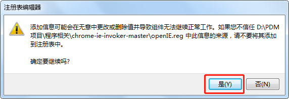
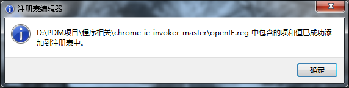
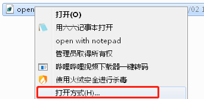
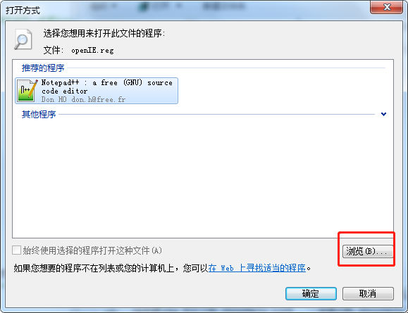
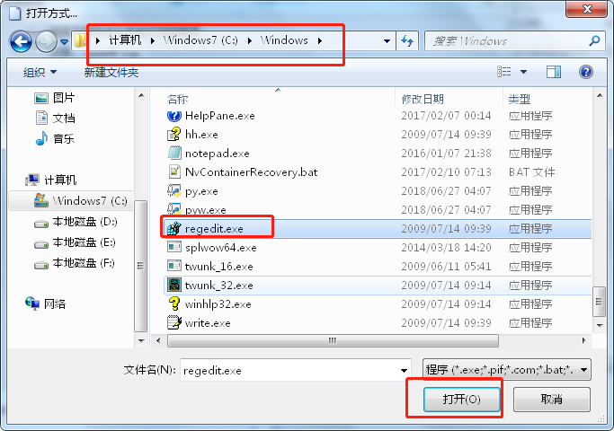
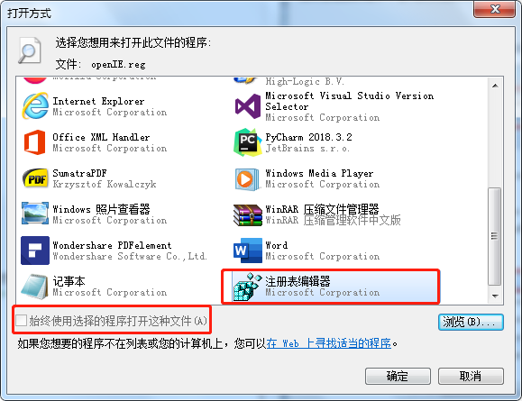

- 下载AutoVue
下载地址：http://39.102.232.225:9193/file/AutoVue19.3.zip
- 下载AutoVue19.3.zip 到D盘，右键解压到AutoVue19.3文件夹下
- 进入AutoVue19.3文件夹后，右键“reg.cmd”， 以管理员身份运行，注册AutoVueX.ocx
- 下载openIE.reg
下载地址：http://39.102.232.225:9193/file/openIE.reg
- 右键文件“openIE.reg”，双击运行，添加注册表。

3.成功添加到注册表

注：如果不能以注册表编辑器运行该文件，右键打开方式，选择浏览进入C:\Windows文件夹下，选择“regedit.exe” ,点击打开。



在打开方式处，选择注册表编辑器，并勾选“始终使用选择的程序打开这种文件”，完成后，再双击注册表文件完成注册。
